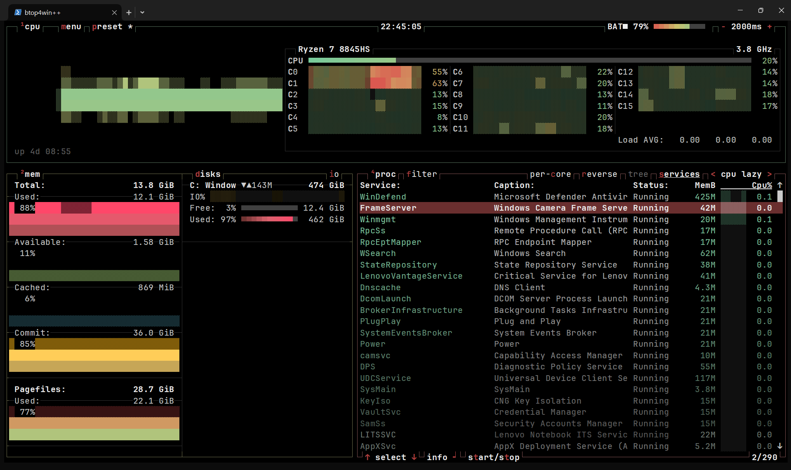
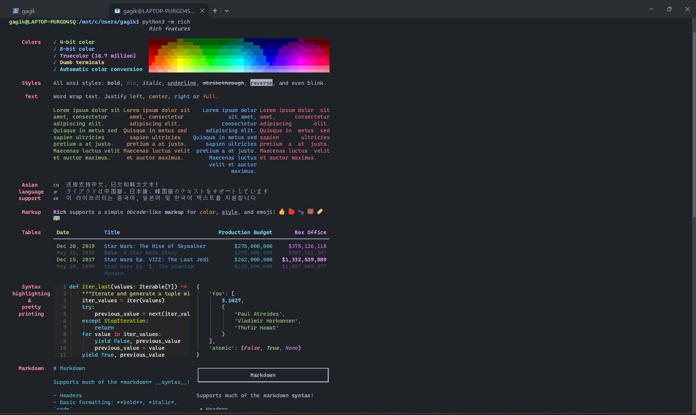
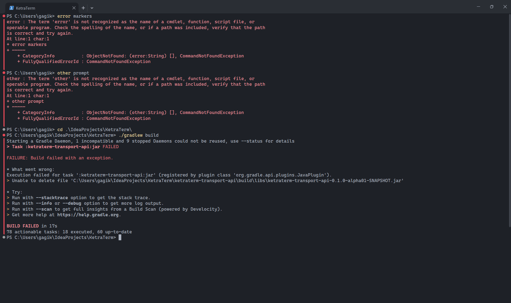

KetraTerm desktop
At the prompt.
Real sessions from the project. Appearance varies by platform, version, font, and settings.
Lazygit and a build running in split panesFull size ↗

System monitoring with btop4winFull size ↗


True color, text styles, and Unicode in the Rich demoFull size ↗


Command status markers beside PowerShell outputFull size ↗

